飯高洞窟美術館/三重県飯高町
三重県飯高町でおそらく唯一、町外の人が聞いた事のある地名、香肌峡温泉。
で、そこにあるレジャー施設の名前が香肌峡スメール。いくら香肌峡だからってスメールってアンタ・・・
で、そのスメールの一画にひときわ胡散スメールを発散させている施設がコレ、飯高洞窟美術館である。
えっと、スメールに義理はないんですけど、もしかしたら近くにあるだけでスメールとは無関係かも知れません。念のため。
外から見える部分はこれだけである。
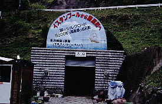 ←入口 出口→ 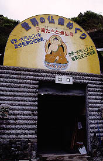
もう、見た瞬間にイ○チキスメール炸裂。
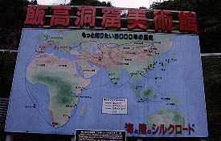
外観は思いっきり洞窟らしい造り。美術館としては破格の設備投資であることは間違いない。
もちろんその分、内装や展示品に金が回される事も考えられるが・・・ま、いっか。中に入ろう。
左手の入口で入場料を払い中に入る。
内部は洞窟というよりトンネル美術館といった方がよさげ。確か前世は石切り場とかなんとか。
ほとんど脇道のないトンネル状の展示スペースが一直線に延びる。
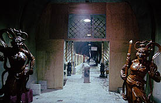
想像していたよりも広くてビックリ。
で、基本的には右手に陶器、左手に仏像がズラーっと並んでいる。
美術館の展示としてはあまりにもぞんざいな扱いを受けているが、いいんです。
あたしゃハナっから美術館だなんて思ってませんから。
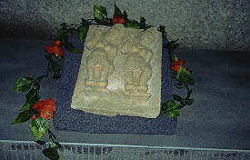 普通造花で飾らないでしょ
蒐集地は主に東〜東南アジア。仏像なども国別に分かれているので各国の仏像が見比べられる。
タイやミャンマーの仏像が懐かしい。インド、中国、ネパール、ベトナム・・・
まさに世界の仏像メガミックス。
インターナショナルお砂踏み霊場の様相を呈している。
しばらく歩くと脇道や水の流れ落ちるスペースが現れる。
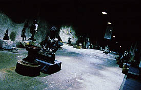 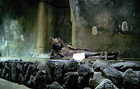
ミャンマーのピンダヤ洞窟をちょっとだけ彷佛させるナイスなエリア。
おお、何かすんごく怪しい雰囲気だぞ。いいぞいいぞ。
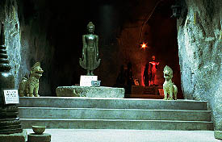 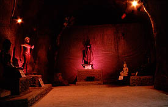
で、その一画にあった世界最大のヒスイの布袋様と金ピカの腹撫で仏。
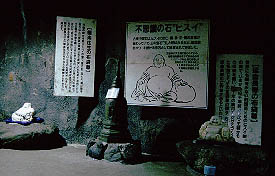 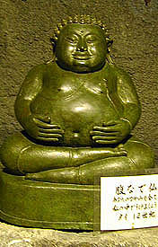
もはや賽銭箱がないのが不思議に思える位の見事な「お寺」っぷりである。
あまり興味がないので端折るが陶器コーナーもある。多分、そこそこの美術品のような気がする。
でも、結局写真撮ってるのはこんなんばっか。
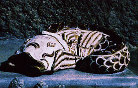 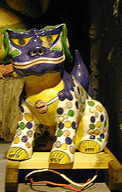
コレクターで館長の飛矢氏の気合いが前面に押し出され過ぎて前のめり気味。
高価な陶器には「貴重な」「素晴らしい」といった主観丸出しのキャプションが付いているのでこちらも価値は分かりやすい。
特に高価と思われる陶器には水避けの屋根が付いているのだが
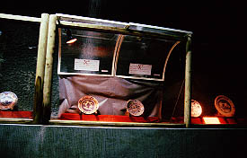 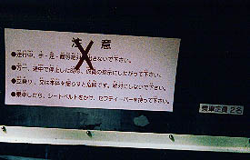
これ、リフトかなんかの屋根じゃないッすかあ？
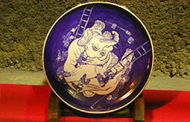・・・絵柄が逆でしょ
トンネルの全体はU字型で戻ってくると最後の方は日本の古民具展示コーナー。
予想通り雑然とした展示方法、ってゆーか積みっ放し。
仏像が並んでいたのに急に現れる隠れキリシタンコーナーや民間信仰の神様の像あたりが館主こだわりの品らしい。
道端に打ち捨てられた看板を見るとオープンしてからまだ数年らしい。
それでこの半分廃墟のような風格。ハンパじゃありません。
2001.5.
珍寺大道場 HOME